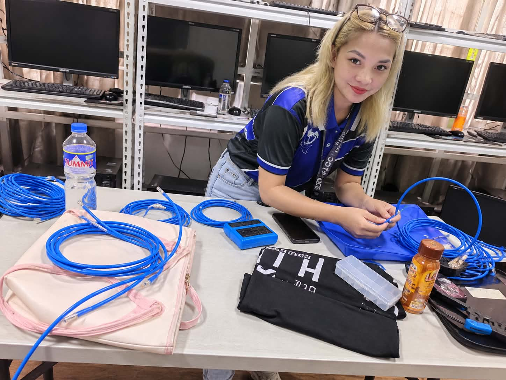
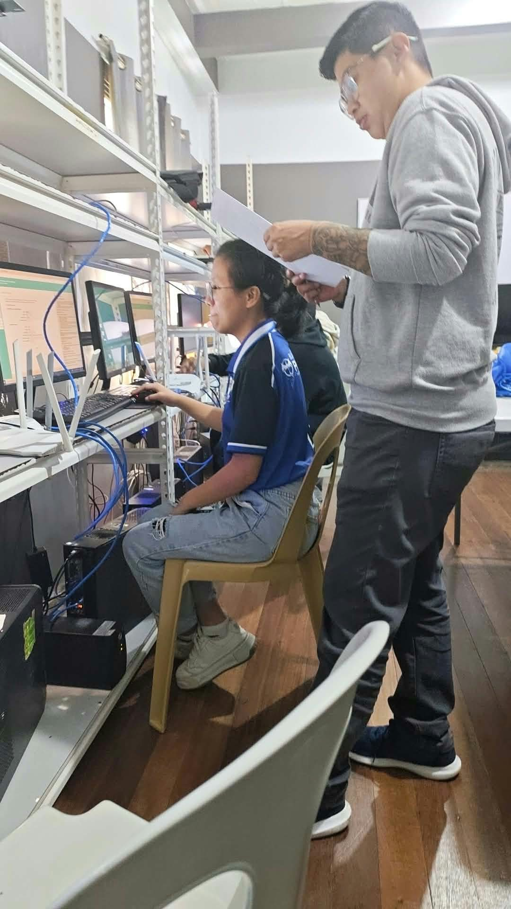
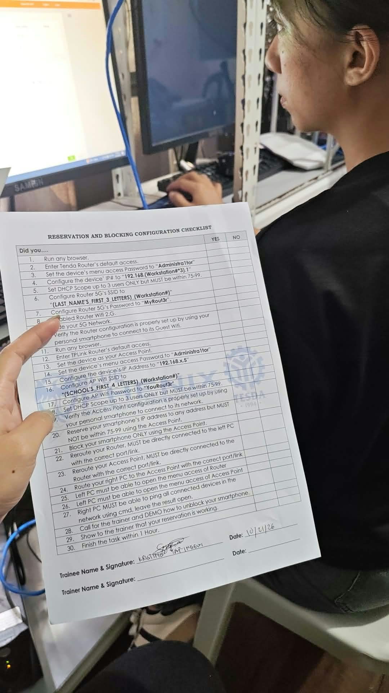

01
Networking basics
Learning how devices connect and communicate across a local network.
IP addressingRouter setup
A learner building practical skills in computer systems, network setup, and thoughtful troubleshooting.
I’m Kristine Yap-ingew, studying Computer System Servicing. I enjoy learning how devices and networks work, then putting that knowledge into practice through hands-on activities.
This portfolio brings together a few moments from my learning journey—from cable work to network configuration—along with the skills I’m continuing to develop.
Foundational areas I’m exploring through guided lab activities and practical coursework.
Learning how devices connect and communicate across a local network.
Practicing cable preparation and careful, reliable connections.
Building a steady process for setup, checks, and basic troubleshooting.
Real snapshots from hands-on Computer System Servicing activities.


